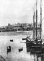
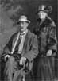
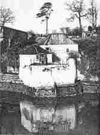

|  | The Willingtons of Shirehampton Willington / Wellington Genealogy |
 |
| Tree details Surname Lists Resources & Links Lifestyles |
| This website is to promote genealogical contacts with Willington and Wellington relations originating from the Bristol region of England. |
|  | Our ancestory is traced back to the early 1700's from Bristol and nearby Shirehampton. The surname was recorded as Willington in the 1700's and early 1800's, with Wellington becoming common during the later 1800's. Many descendants immigrated to Australia during the 1800's. Earliest known ancestors were hoopers, coopers, farmers, and mariners. During the middle of the 1800's Stephen Willington was the innkeeper of Lamplighter's Hall near Shirehampton, and his brother John was the Gunpowder Magazine keeper of the Powder House on the Avon river. Many of the family went to Australia, with a large group in Ballarat and many of them in the undertaking business. This website contains descendent tree details, surname lists, census and immigration details, links to forums, other genealogy sites and geographical/locality information, and lifestyle articles of interest. Please take time to email us with your comments and/or interests for inclusion in our guest book. |